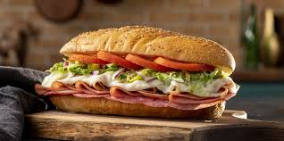

Grinder

Description
A grinder is a variety of submarine sandwich that is especially popular in New England. The sandwich features a long roll that resembles Italian bread, but the interior is chewier and the exterior is crustier.
The roll is sliced through the middle and is filled with olive oil, sliced ham, turkey, salami, or prosciutto, provolone cheese, tomatoes, and lettuce.
It's believed that the sandwich got its name after the fact that people have to grind their teeth while chewing the crusty bread.
Ingredients
- Mayonnaise
- Garlic Paste
- Red Wine Vinegar
- Seasoning Blend: Salt, Pepper, Oregano, Italian Seasoning (optional), and Red Pepper Flakes (optional)
- Pepperoncini peppers
- Red Onion
- Iceberg Lettuce (shredded)
- Parmesan Cheese
- Deli Meats: Honey Roasted Turkey Breast, Salami, Prosciutto, and Capocollo
- Grinder Hoagie Roll, or Italian Bread roll
- Tomato
- Sliced Cheese: Provolone, Colby Jack, Spicy Pepper Jack, or whatever you like
- Parmesan Cheese (grated)
Instructions
- Preheat your oven to 425°F
- First, add together salad dressing ingredients (mayonnaise, garlic paste, seasoning blend, parmesan, pepperoncin, and red wine vinegar) in a large bowl. Stir until combined. This makes the 'grinder salad'.
- Pour in the shredded iceburg lettuce and toss until the lettuce is thoroughly coated. Set aside to marinate.
- If needed, slice hoagie roll or Italian Bread roll through the middle. Then layer on the sliced cheese, deli meats, and toast for 8-10 minutes until the cheese is melted and bread is toasted.
- Remove the toasted roll from the oven and prepare for assembly.
- Take the sliced tomato and add on top of meats. Season with a little salt and pepper.
- Top tomato with grinder salad and add additional grated parmesan to your liking.
- Close the sandwich with the other half of the roll and press the sandwich together. Enjoy!